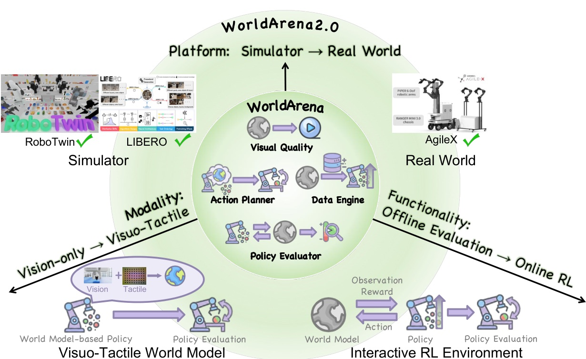

WO
WorldArena
世界模型评测，2.0 版在仿真之外新增 AgileX ALOHA 真机倒水、擦桌任务。
判词
榜内有操作泛化、世界生成与综合三套体系，引用前先确认是哪一套；2.0 与 1.0 分数不可比。表首行 UNIS 得 0.7364，与第十名相差不到 0.02。
壹已知之弊
- 2.0 版本与 1.0 分数不可比。
- 真机任务样本量有限。
贰碑面
WorldArena
官方榜单 ↗
类型 仿真指标 EWMScore / 成功率（按分榜）行数 120最近 2026-09-16
据官方 HF Space（2026-11-14），2.0 版 Track1 81 条、Track2 47 条，本表各录前 20；Track3 三个真机榜各 11 条全录。1.0 版 Track1 127 条录前 20。结果文件不列机构；2.0 与 1.0 分数不可互比。
WorldIncept 以 72.33 列 2.0 Track1 第一新ViTacX 以 76.64 列 2.0 真机总榜第一新
| # | 模型 | EWMScore / 成功率（按分榜） | 协议 | 分榜 | 日期 | 状态 |
|---|---|---|---|---|---|---|
| 1 | WorldIncept |
72.33 |
EWMScore-P（按难度与分布外修正）；15 项感知指标；2.0 Track1 模拟器视频质量 |
2.0 Track1 视频质量 | 09·16 | 官方榜 |
| 2 | BWM-Turbo |
71.49 |
EWMScore-P（按难度与分布外修正）；15 项感知指标；2.0 Track1 模拟器视频质量 |
2.0 Track1 视频质量 | 09·16 | 官方榜 |
| 3 | DWM |
71.15 |
EWMScore-P（按难度与分布外修正）；15 项感知指标；2.0 Track1 模拟器视频质量 |
2.0 Track1 视频质量 | 09·16 | 官方榜 |
| 4 | Waterloo |
71.05 |
EWMScore-P（按难度与分布外修正）；15 项感知指标；2.0 Track1 模拟器视频质量 |
2.0 Track1 视频质量 | 09·16 | 官方榜 |
| 5 | ActiFlow |
70.83 |
EWMScore-P（按难度与分布外修正）；15 项感知指标；2.0 Track1 模拟器视频质量 |
2.0 Track1 视频质量 | 09·16 | 官方榜 |
| 6 | PrismWorld |
70.70 |
EWMScore-P（按难度与分布外修正）；15 项感知指标；2.0 Track1 模拟器视频质量 |
2.0 Track1 视频质量 | 09·16 | 官方榜 |
| 7 | sonata-wm |
70.62 |
EWMScore-P（按难度与分布外修正）；15 项感知指标；2.0 Track1 模拟器视频质量 |
2.0 Track1 视频质量 | 09·16 | 官方榜 |
| 8 | Concerto-AWM |
70.56 |
EWMScore-P（按难度与分布外修正）；15 项感知指标；2.0 Track1 模拟器视频质量 |
2.0 Track1 视频质量 | 09·16 | 官方榜 |
| 9 | Snowl-WM |
70.55 |
EWMScore-P（按难度与分布外修正）；15 项感知指标；2.0 Track1 模拟器视频质量 |
2.0 Track1 视频质量 | 09·16 | 官方榜 |
| 10 | K1-World |
70.48 |
EWMScore-P（按难度与分布外修正）；15 项感知指标；2.0 Track1 模拟器视频质量 |
2.0 Track1 视频质量 | 09·16 | 官方榜 |
| 11 | Nora-WM |
70.46 |
EWMScore-P（按难度与分布外修正）；15 项感知指标；2.0 Track1 模拟器视频质量 |
2.0 Track1 视频质量 | 09·16 | 官方榜 |
| 12 | Kairo-WM |
70.39 |
EWMScore-P（按难度与分布外修正）；15 项感知指标；2.0 Track1 模拟器视频质量 |
2.0 Track1 视频质量 | 09·16 | 官方榜 |
| 13 | Scope-WM |
70.39 |
EWMScore-P（按难度与分布外修正）；15 项感知指标；2.0 Track1 模拟器视频质量 |
2.0 Track1 视频质量 | 09·16 | 官方榜 |
| 14 | Hera-WM |
70.29 |
EWMScore-P（按难度与分布外修正）；15 项感知指标；2.0 Track1 模拟器视频质量 |
2.0 Track1 视频质量 | 09·16 | 官方榜 |
| 15 | NexWorld |
70.28 |
EWMScore-P（按难度与分布外修正）；15 项感知指标；2.0 Track1 模拟器视频质量 |
2.0 Track1 视频质量 | 09·16 | 官方榜 |
| 16 | Leto-WM |
70.22 |
EWMScore-P（按难度与分布外修正）；15 项感知指标；2.0 Track1 模拟器视频质量 |
2.0 Track1 视频质量 | 09·16 | 官方榜 |
| 17 | Supervision_WM |
70.17 |
EWMScore-P（按难度与分布外修正）；15 项感知指标；2.0 Track1 模拟器视频质量 |
2.0 Track1 视频质量 | 09·16 | 官方榜 |
| 18 | CAI-WM |
70.07 |
EWMScore-P（按难度与分布外修正）；15 项感知指标；2.0 Track1 模拟器视频质量 |
2.0 Track1 视频质量 | 09·16 | 官方榜 |
| 19 | CR-World |
70.05 |
EWMScore-P（按难度与分布外修正）；15 项感知指标；2.0 Track1 模拟器视频质量 |
2.0 Track1 视频质量 | 09·16 | 官方榜 |
| 20 | WMDLC |
70.00 |
EWMScore-P（按难度与分布外修正）；15 项感知指标；2.0 Track1 模拟器视频质量 |
2.0 Track1 视频质量 | 09·16 | 官方榜 |
| 1 | MW2 |
72.93 |
2.0 Track2：在世界模型环境内训练的策略在 Adjust Bottle 上的成功率（%） |
2.0 Track2 RL 环境 | 09·16 | 官方榜 |
| 2 | TTWM |
72.40 |
2.0 Track2：在世界模型环境内训练的策略在 Adjust Bottle 上的成功率（%） |
2.0 Track2 RL 环境 | 09·16 | 官方榜 |
| 3 | Polaris |
68.23 |
2.0 Track2：在世界模型环境内训练的策略在 Adjust Bottle 上的成功率（%） |
2.0 Track2 RL 环境 | 09·16 | 官方榜 |
| 4 | AlphaWM |
65.62 |
2.0 Track2：在世界模型环境内训练的策略在 Adjust Bottle 上的成功率（%） |
2.0 Track2 RL 环境 | 09·16 | 官方榜 |
| 4 | Foreworld |
65.62 |
2.0 Track2：在世界模型环境内训练的策略在 Adjust Bottle 上的成功率（%） |
2.0 Track2 RL 环境 | 09·16 | 官方榜 |
| 6 | BiArmFlow-WAM |
65.10 |
2.0 Track2：在世界模型环境内训练的策略在 Adjust Bottle 上的成功率（%） |
2.0 Track2 RL 环境 | 09·16 | 官方榜 |
| 7 | WoVR Plus |
64.41 |
2.0 Track2：在世界模型环境内训练的策略在 Adjust Bottle 上的成功率（%） |
2.0 Track2 RL 环境 | 09·16 | 官方榜 |
| 8 | Dexworld |
64.32 |
2.0 Track2：在世界模型环境内训练的策略在 Adjust Bottle 上的成功率（%） |
2.0 Track2 RL 环境 | 09·16 | 官方榜 |
| 9 | ZetaWM |
64.06 |
2.0 Track2：在世界模型环境内训练的策略在 Adjust Bottle 上的成功率（%） |
2.0 Track2 RL 环境 | 09·16 | 官方榜 |
| 10 | Shanks |
63.54 |
2.0 Track2：在世界模型环境内训练的策略在 Adjust Bottle 上的成功率（%） |
2.0 Track2 RL 环境 | 09·16 | 官方榜 |
| 10 | GB |
63.54 |
2.0 Track2：在世界模型环境内训练的策略在 Adjust Bottle 上的成功率（%） |
2.0 Track2 RL 环境 | 09·16 | 官方榜 |
| 10 | c-cwm |
63.54 |
2.0 Track2：在世界模型环境内训练的策略在 Adjust Bottle 上的成功率（%） |
2.0 Track2 RL 环境 | 09·16 | 官方榜 |
| 13 | WAM-FFF |
63.02 |
2.0 Track2：在世界模型环境内训练的策略在 Adjust Bottle 上的成功率（%） |
2.0 Track2 RL 环境 | 09·16 | 官方榜 |
| 13 | Dexbrain |
63.02 |
2.0 Track2：在世界模型环境内训练的策略在 Adjust Bottle 上的成功率（%） |
2.0 Track2 RL 环境 | 09·16 | 官方榜 |
| 15 | DreamX-Phi |
62.63 |
2.0 Track2：在世界模型环境内训练的策略在 Adjust Bottle 上的成功率（%） |
2.0 Track2 RL 环境 | 09·16 | 官方榜 |
| 16 | Watermelon |
62.50 |
2.0 Track2：在世界模型环境内训练的策略在 Adjust Bottle 上的成功率（%） |
2.0 Track2 RL 环境 | 09·16 | 官方榜 |
| 16 | K1X |
62.50 |
2.0 Track2：在世界模型环境内训练的策略在 Adjust Bottle 上的成功率（%） |
2.0 Track2 RL 环境 | 09·16 | 官方榜 |
| 16 | CWM |
62.50 |
2.0 Track2：在世界模型环境内训练的策略在 Adjust Bottle 上的成功率（%） |
2.0 Track2 RL 环境 | 09·16 | 官方榜 |
| 16 | Worldbrain |
62.50 |
2.0 Track2：在世界模型环境内训练的策略在 Adjust Bottle 上的成功率（%） |
2.0 Track2 RL 环境 | 09·16 | 官方榜 |
| 16 | LinearWM |
62.50 |
2.0 Track2：在世界模型环境内训练的策略在 Adjust Bottle 上的成功率（%） |
2.0 Track2 RL 环境 | 09·16 | 官方榜 |
| 1 | ViTacX |
76.64 |
2.0 Track3 真机总分；6 个视觉任务 + 3 个视触觉任务；8 月 15 日检查点已验证结果 |
2.0 Track3 真机总榜 | 09·16 | 官方榜 |
| 2 | OmniFlow |
67.37 |
2.0 Track3 真机总分；6 个视觉任务 + 3 个视触觉任务；8 月 15 日检查点已验证结果 |
2.0 Track3 真机总榜 | 09·16 | 官方榜 |
| 3 | Nexus-T |
66.84 |
2.0 Track3 真机总分；6 个视觉任务 + 3 个视触觉任务；8 月 15 日检查点已验证结果 |
2.0 Track3 真机总榜 | 09·16 | 官方榜 |
| 4 | Aster motion |
58.63 |
2.0 Track3 真机总分；6 个视觉任务 + 3 个视触觉任务；8 月 15 日检查点已验证结果 |
2.0 Track3 真机总榜 | 09·16 | 官方榜 |
| 5 | nimbus |
44.78 |
2.0 Track3 真机总分；6 个视觉任务 + 3 个视触觉任务；8 月 15 日检查点已验证结果 |
2.0 Track3 真机总榜 | 09·16 | 官方榜 |
| 6 | Vistact |
43.54 |
2.0 Track3 真机总分；6 个视觉任务 + 3 个视触觉任务；8 月 15 日检查点已验证结果 |
2.0 Track3 真机总榜 | 09·16 | 官方榜 |
| 7 | Pi_Plus |
39.04 |
2.0 Track3 真机总分；6 个视觉任务 + 3 个视触觉任务；8 月 15 日检查点已验证结果 |
2.0 Track3 真机总榜 | 09·16 | 官方榜 |
| 8 | PanSim Intelligence |
34.11 |
2.0 Track3 真机总分；6 个视觉任务 + 3 个视触觉任务；8 月 15 日检查点已验证结果 |
2.0 Track3 真机总榜 | 09·16 | 官方榜 |
| 9 | XY-M |
22.40 |
2.0 Track3 真机总分；6 个视觉任务 + 3 个视触觉任务；8 月 15 日检查点已验证结果 |
2.0 Track3 真机总榜 | 09·16 | 官方榜 |
| 10 | WAM-Alpha |
14.37 |
2.0 Track3 真机总分；6 个视觉任务 + 3 个视触觉任务；8 月 15 日检查点已验证结果 |
2.0 Track3 真机总榜 | 09·16 | 官方榜 |
| 11 | Wan 2.2 |
0.72 |
2.0 Track3 真机总分；6 个视觉任务 + 3 个视触觉任务；8 月 15 日检查点已验证结果 |
2.0 Track3 真机总榜 | 09·16 | 官方榜 |
| 1 | Nexus-T |
80.00 |
视触觉成功率（%）；取薯片 80.00 / 削黄瓜 90.00 / 插两脚插头 70.00 |
2.0 Track3.1 视触觉 | 09·16 | 官方榜 |
| 2 | OmniFlow |
73.33 |
视触觉成功率（%）；取薯片 90.00 / 削黄瓜 40.00 / 插两脚插头 90.00 |
2.0 Track3.1 视触觉 | 09·16 | 官方榜 |
| 3 | ViTacX |
66.67 |
视触觉成功率（%）；取薯片 90.00 / 削黄瓜 60.00 / 插两脚插头 50.00 |
2.0 Track3.1 视触觉 | 09·16 | 官方榜 |
| 4 | Aster motion |
63.33 |
视触觉成功率（%）；取薯片 70.00 / 削黄瓜 90.00 / 插两脚插头 30.00 |
2.0 Track3.1 视触觉 | 09·16 | 官方榜 |
| 5 | Vistact |
56.67 |
视触觉成功率（%）；取薯片 60.00 / 削黄瓜 70.00 / 插两脚插头 40.00 |
2.0 Track3.1 视触觉 | 09·16 | 官方榜 |
| 6 | Pi_Plus |
33.33 |
视触觉成功率（%）；取薯片 90.00 / 削黄瓜 0.00 / 插两脚插头 10.00 |
2.0 Track3.1 视触觉 | 09·16 | 官方榜 |
| 7 | nimbus |
33.33 |
视触觉成功率（%）；取薯片 80.00 / 削黄瓜 0.00 / 插两脚插头 20.00 |
2.0 Track3.1 视触觉 | 09·16 | 官方榜 |
| 8 | XY-M |
26.67 |
视触觉成功率（%）；取薯片 20.00 / 削黄瓜 60.00 / 插两脚插头 0.00 |
2.0 Track3.1 视触觉 | 09·16 | 官方榜 |
| 9 | PanSim Intelligence |
10.00 |
视触觉成功率（%）；取薯片 0.00 / 削黄瓜 30.00 / 插两脚插头 0.00 |
2.0 Track3.1 视触觉 | 09·16 | 官方榜 |
| 10 | WAM-Alpha |
6.67 |
视触觉成功率（%）；取薯片 0.00 / 削黄瓜 20.00 / 插两脚插头 0.00 |
2.0 Track3.1 视触觉 | 09·16 | 官方榜 |
| 11 | Wan 2.2 |
0.00 |
视触觉成功率（%）；取薯片 0.00 / 削黄瓜 0.00 / 插两脚插头 0.00 |
2.0 Track3.1 视触觉 | 09·16 | 官方榜 |
| 1 | ViTacX |
85.00 |
纯视觉真机成功率（%）；擦桌、清理桌面、按指令清理桌面、倒水、叠衣服、折纸箱 6 任务 |
2.0 Track3.2 纯视觉 | 09·16 | 官方榜 |
| 2 | OmniFlow |
75.00 |
纯视觉真机成功率（%）；擦桌、清理桌面、按指令清理桌面、倒水、叠衣服、折纸箱 6 任务 |
2.0 Track3.2 纯视觉 | 09·16 | 官方榜 |
| 3 | Nexus-T |
66.67 |
纯视觉真机成功率（%）；擦桌、清理桌面、按指令清理桌面、倒水、叠衣服、折纸箱 6 任务 |
2.0 Track3.2 纯视觉 | 09·16 | 官方榜 |
| 4 | Aster motion |
65.00 |
纯视觉真机成功率（%）；擦桌、清理桌面、按指令清理桌面、倒水、叠衣服、折纸箱 6 任务 |
2.0 Track3.2 纯视觉 | 09·16 | 官方榜 |
| 5 | nimbus |
55.00 |
纯视觉真机成功率（%）；擦桌、清理桌面、按指令清理桌面、倒水、叠衣服、折纸箱 6 任务 |
2.0 Track3.2 纯视觉 | 09·16 | 官方榜 |
| 6 | Pi_Plus |
45.00 |
纯视觉真机成功率（%）；擦桌、清理桌面、按指令清理桌面、倒水、叠衣服、折纸箱 6 任务 |
2.0 Track3.2 纯视觉 | 09·16 | 官方榜 |
| 7 | PanSim Intelligence |
45.00 |
纯视觉真机成功率（%）；擦桌、清理桌面、按指令清理桌面、倒水、叠衣服、折纸箱 6 任务 |
2.0 Track3.2 纯视觉 | 09·16 | 官方榜 |
| 8 | Vistact |
43.33 |
纯视觉真机成功率（%）；擦桌、清理桌面、按指令清理桌面、倒水、叠衣服、折纸箱 6 任务 |
2.0 Track3.2 纯视觉 | 09·16 | 官方榜 |
| 9 | XY-M |
26.67 |
纯视觉真机成功率（%）；擦桌、清理桌面、按指令清理桌面、倒水、叠衣服、折纸箱 6 任务 |
2.0 Track3.2 纯视觉 | 09·16 | 官方榜 |
| 10 | WAM-Alpha |
23.33 |
纯视觉真机成功率（%）；擦桌、清理桌面、按指令清理桌面、倒水、叠衣服、折纸箱 6 任务 |
2.0 Track3.2 纯视觉 | 09·16 | 官方榜 |
| 11 | Wan 2.2 |
1.67 |
纯视觉真机成功率（%）；擦桌、清理桌面、按指令清理桌面、倒水、叠衣服、折纸箱 6 任务 |
2.0 Track3.2 纯视觉 | 09·16 | 官方榜 |
| 1 | UNIS |
73.64 |
1.0 EWMScore（15 项指标均值）；视觉 61.78 / 运动 85.08 / 一致性 55.87 / 物理 64.60 / 3D 92.04 / 可控 91.60；闭源 |
1.0 Track1 视频生成 | 07·13 | 官方榜 |
| 2 | SisyphusWorld |
73.06 |
1.0 EWMScore（15 项指标均值）；视觉 60.18 / 运动 89.17 / 一致性 58.11 / 物理 58.28 / 3D 92.60 / 可控 85.93；闭源 |
1.0 Track1 视频生成 | 07·13 | 官方榜 |
| 3 | BWM-Fast |
72.71 |
1.0 EWMScore（15 项指标均值）；视觉 63.08 / 运动 79.67 / 一致性 58.22 / 物理 62.38 / 3D 91.78 / 可控 89.68；闭源 |
1.0 Track1 视频生成 | 07·13 | 官方榜 |
| 4 | SACWM |
72.67 |
1.0 EWMScore（15 项指标均值）；视觉 59.80 / 运动 85.58 / 一致性 58.86 / 物理 59.62 / 3D 93.66 / 可控 85.41；闭源 |
1.0 Track1 视频生成 | 07·13 | 官方榜 |
| 5 | DexWorldEngine |
72.66 |
1.0 EWMScore（15 项指标均值）；视觉 59.70 / 运动 79.25 / 一致性 58.24 / 物理 66.22 / 3D 91.88 / 可控 91.04；闭源 |
1.0 Track1 视频生成 | 07·13 | 官方榜 |
| 6 | PAIWorld |
72.34 |
1.0 EWMScore（15 项指标均值）；视觉 63.12 / 运动 80.49 / 一致性 57.82 / 物理 61.75 / 3D 91.58 / 可控 87.07；闭源 |
1.0 Track1 视频生成 | 07·13 | 官方榜 |
| 7 | Inspatio-Curious |
72.12 |
1.0 EWMScore（15 项指标均值）；视觉 60.26 / 运动 80.36 / 一致性 57.77 / 物理 62.08 / 3D 92.26 / 可控 89.01；闭源 |
1.0 Track1 视频生成 | 07·15 | 官方榜 |
| 8 | FlowWAM-FiveAges |
72.00 |
1.0 EWMScore（15 项指标均值）；视觉 63.54 / 运动 80.14 / 一致性 57.34 / 物理 60.54 / 3D 90.94 / 可控 86.96；闭源 |
1.0 Track1 视频生成 | 07·13 | 官方榜 |
| 9 | EvoPhysWorld |
71.73 |
1.0 EWMScore（15 项指标均值）；视觉 60.07 / 运动 84.15 / 一致性 58.04 / 物理 59.74 / 3D 89.20 / 可控 85.62；闭源 |
1.0 Track1 视频生成 | 06·19 | 官方榜 |
| 10 | NoxWM |
71.70 |
1.0 EWMScore（15 项指标均值）；视觉 60.73 / 运动 87.28 / 一致性 55.22 / 物理 58.42 / 3D 87.83 / 可控 86.68；闭源 |
1.0 Track1 视频生成 | 07·13 | 官方榜 |
| 11 | LeviosaWM |
71.64 |
1.0 EWMScore（15 项指标均值）；视觉 59.28 / 运动 88.26 / 一致性 55.08 / 物理 56.34 / 3D 88.48 / 可控 88.56；闭源 |
1.0 Track1 视频生成 | 07·13 | 官方榜 |
| 12 | SynapX-R |
71.57 |
1.0 EWMScore（15 项指标均值）；视觉 63.42 / 运动 77.96 / 一致性 57.49 / 物理 58.52 / 3D 90.38 / 可控 89.60；闭源 |
1.0 Track1 视频生成 | 07·13 | 官方榜 |
| 13 | AlohoWM |
71.54 |
1.0 EWMScore（15 项指标均值）；视觉 60.42 / 运动 88.18 / 一致性 54.89 / 物理 56.04 / 3D 86.75 / 可控 88.52；闭源 |
1.0 Track1 视频生成 | 07·13 | 官方榜 |
| 14 | ExpectoWM |
71.39 |
1.0 EWMScore（15 项指标均值）；视觉 60.94 / 运动 86.05 / 一致性 55.47 / 物理 58.24 / 3D 87.78 / 可控 85.74；闭源 |
1.0 Track1 视频生成 | 07·13 | 官方榜 |
| 15 | BetaBWM |
71.22 |
1.0 EWMScore（15 项指标均值）；视觉 62.85 / 运动 68.83 / 一致性 61.36 / 物理 63.78 / 3D 92.04 / 可控 88.78；闭源 |
1.0 Track1 视频生成 | 06·19 | 官方榜 |
| 16 | K-World |
71.22 |
1.0 EWMScore（15 项指标均值）；视觉 62.72 / 运动 75.95 / 一致性 58.08 / 物理 59.55 / 3D 90.96 / 可控 88.51；闭源 |
1.0 Track1 视频生成 | 07·15 | 官方榜 |
| 17 | ExpelliWM |
71.08 |
1.0 EWMScore（15 项指标均值）；视觉 58.35 / 运动 89.70 / 一致性 54.58 / 物理 53.34 / 3D 87.40 / 可控 88.40；闭源 |
1.0 Track1 视频生成 | 07·15 | 官方榜 |
| 18 | MAI |
70.96 |
1.0 EWMScore（15 项指标均值）；视觉 63.42 / 运动 64.05 / 一致性 59.10 / 物理 67.35 / 3D 94.42 / 可控 90.56；闭源 |
1.0 Track1 视频生成 | 06·19 | 官方榜 |
| 19 | SynapX |
70.93 |
1.0 EWMScore（15 项指标均值）；视觉 63.21 / 运动 76.39 / 一致性 57.51 / 物理 57.69 / 3D 90.08 / 可控 88.54；闭源 |
1.0 Track1 视频生成 | 06·19 | 官方榜 |
| 20 | WAI |
70.89 |
1.0 EWMScore（15 项指标均值）；视觉 63.35 / 运动 63.90 / 一致性 59.11 / 物理 67.24 / 3D 94.44 / 可控 90.44；闭源 |
1.0 Track1 视频生成 | 06·19 | 官方榜 |
| 1 | DSCFuncWorld |
66.00 |
1.0 Track2 Data Engine：adjust_bottle、blocks_ranking_rgb、click_bell、open_laptop、pick_dual_bottles 5 个任务分数均值（百分制）；闭源 |
1.0 数据引擎 | 05·29 | 官方榜 |
| 2 | Z-WM-V1 |
60.00 |
1.0 Track2 Data Engine：adjust_bottle、blocks_ranking_rgb、click_bell、open_laptop、pick_dual_bottles 5 个任务分数均值（百分制）；闭源 |
1.0 数据引擎 | 05·29 | 官方榜 |
| 3 | BLM |
59.80 |
1.0 Track2 Data Engine：adjust_bottle、blocks_ranking_rgb、click_bell、open_laptop、pick_dual_bottles 5 个任务分数均值（百分制）；开源 |
1.0 数据引擎 | 05·29 | 官方榜 |
| 4 | BetaBWM |
50.00 |
1.0 Track2 Data Engine：adjust_bottle、blocks_ranking_rgb、click_bell、open_laptop、pick_dual_bottles 5 个任务分数均值（百分制）；闭源 |
1.0 数据引擎 | 05·29 | 官方榜 |
| 5 | WoW |
47.80 |
1.0 Track2 Data Engine：adjust_bottle、blocks_ranking_rgb、click_bell、open_laptop、pick_dual_bottles 5 个任务分数均值（百分制）；开源 |
1.0 数据引擎 | 05·29 | 官方榜 |
| 6 | Robohero0 |
47.60 |
1.0 Track2 Data Engine：adjust_bottle、blocks_ranking_rgb、click_bell、open_laptop、pick_dual_bottles 5 个任务分数均值（百分制）；闭源 |
1.0 数据引擎 | 05·29 | 官方榜 |
| 7 | BaoRobot |
7.20 |
1.0 Track2 Data Engine：adjust_bottle、blocks_ranking_rgb、click_bell、open_laptop、pick_dual_bottles 5 个任务分数均值（百分制）；闭源 |
1.0 数据引擎 | 07·13 | 官方榜 |
| 8 | AstraAct |
3.60 |
1.0 Track2 Data Engine：adjust_bottle、blocks_ranking_rgb、click_bell、open_laptop、pick_dual_bottles 5 个任务分数均值（百分制）；闭源 |
1.0 数据引擎 | 05·29 | 官方榜 |
| 1 | WorldScape v0.2 |
99.53 |
1.0 Track2 Policy Evaluator 分（百分制）；闭源 |
1.0 策略评估器 | 06·03 | 官方榜 |
| 2 | chill |
99.22 |
1.0 Track2 Policy Evaluator 分（百分制）；闭源 |
1.0 策略评估器 | 06·03 | 官方榜 |
| 3 | Ctrl-World |
98.60 |
1.0 Track2 Policy Evaluator 分（百分制）；开源 |
1.0 策略评估器 | 05·09 | 官方榜 |
| 4 | DSCFuncWorld |
98.54 |
1.0 Track2 Policy Evaluator 分（百分制）；闭源 |
1.0 策略评估器 | 06·03 | 官方榜 |
| 5 | Curr_World |
98.47 |
1.0 Track2 Policy Evaluator 分（百分制）；闭源 |
1.0 策略评估器 | 06·03 | 官方榜 |
| 6 | BLM |
97.78 |
1.0 Track2 Policy Evaluator 分（百分制）；开源 |
1.0 策略评估器 | 06·03 | 官方榜 |
| 7 | upset |
97.75 |
1.0 Track2 Policy Evaluator 分（百分制）；闭源 |
1.0 策略评估器 | 06·03 | 官方榜 |
| 8 | WoW |
95.88 |
1.0 Track2 Policy Evaluator 分（百分制）；开源 |
1.0 策略评估器 | 06·03 | 官方榜 |
| 9 | py |
95.36 |
1.0 Track2 Policy Evaluator 分（百分制）；闭源 |
1.0 策略评估器 | 06·03 | 官方榜 |
| 10 | N-World |
94.19 |
1.0 Track2 Policy Evaluator 分（百分制）；闭源 |
1.0 策略评估器 | 06·03 | 官方榜 |
| 11 | Robohero_0 |
92.30 |
1.0 Track2 Policy Evaluator 分（百分制）；闭源 |
1.0 策略评估器 | 05·15 | 官方榜 |
| 12 | BaoRobot |
91.43 |
1.0 Track2 Policy Evaluator 分（百分制）；闭源 |
1.0 策略评估器 | 06·20 | 官方榜 |
| 13 | Z-WM_v1 |
87.61 |
1.0 Track2 Policy Evaluator 分（百分制）；闭源 |
1.0 策略评估器 | 06·03 | 官方榜 |
| 14 | RoboScape |
86.30 |
1.0 Track2 Policy Evaluator 分（百分制）；开源 |
1.0 策略评估器 | 05·09 | 官方榜 |
| 15 | IRASim |
65.80 |
1.0 Track2 Policy Evaluator 分（百分制）；开源 |
1.0 策略评估器 | 05·09 | 官方榜 |
| 16 | Cosmos-Predict 2.5(action) NVIDIA |
48.30 |
1.0 Track2 Policy Evaluator 分（百分制）；开源 |
1.0 策略评估器 | 05·09 | 官方榜 |
| 17 | ACT |
42.72 |
1.0 Track2 Policy Evaluator 分（百分制）；闭源 |
1.0 策略评估器 | 06·03 | 官方榜 |
| 18 | ctrlworld_openpi_policyloop_emergency |
19.20 |
1.0 Track2 Policy Evaluator 分（百分制）；闭源 |
1.0 策略评估器 | 06·03 | 官方榜 |
| 19 | antegg |
7.30 |
1.0 Track2 Policy Evaluator 分（百分制）；闭源 |
1.0 策略评估器 | 06·03 | 官方榜 |
叁驿报